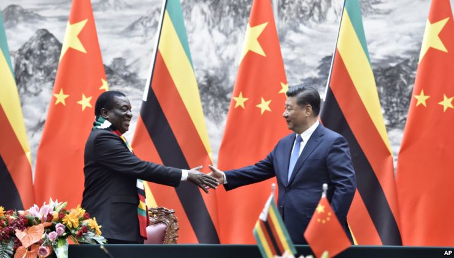

Much of the recent, heated debate surrounding Zimbabwe’s coming elections centers on the nation’s largest foreign investor, China — and analysts say the conversation is distracting from the real election issue: Zimbabwe’s failing economy.

Zimbabwe Election Campaigns Ask: What about China?